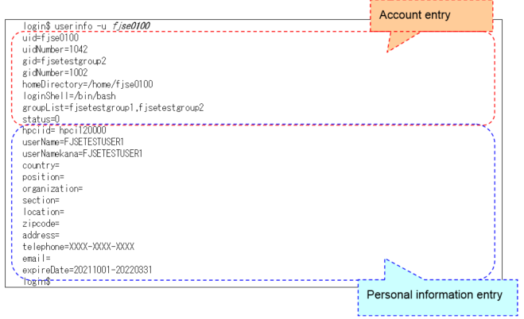
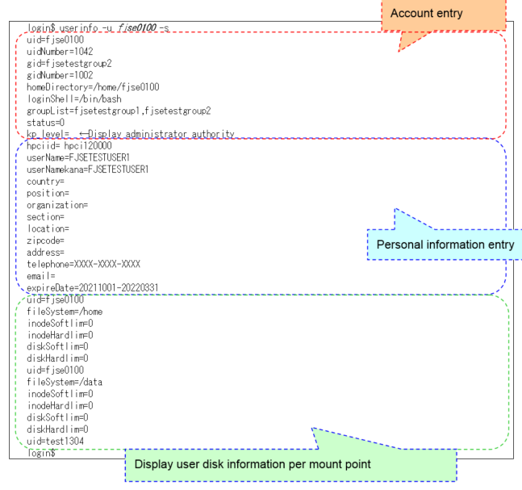
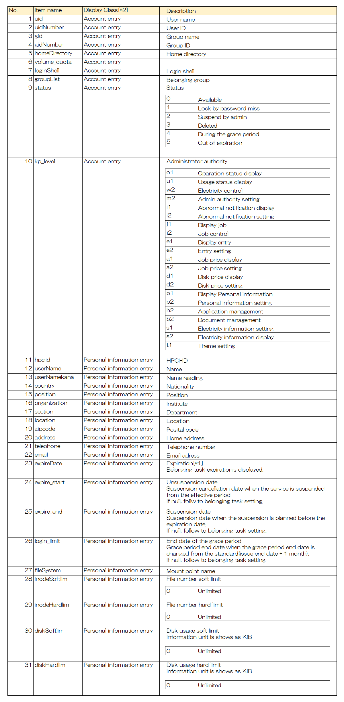

userinfo [-u user name…] [option other than -u, -l]
userinfo -l
※combined specification of -u, -i, -g, -n, -y, -h is AND search, multiple specification within the same option is OR search.
[Description]
userinfo command displays information about users registered in the directory service (OpenLDAP) on the user management node. If the display result is more than one line, it will be displayed in the order retrieved from the directory service (OpenLDAP).
Users can only display their own user information. The project manager can display user information of members belonging to the group. The system administrator can display user information of all members registered in the system. Hoever, it is required to be given the administrator authority which is described in User management function . If no option is specified, even the project manager and system administrator can display only their own user information.
Personal information can be displayed only by an administrator who has the authority to “display personal information” or “set personal information”. However, even if the “personal information display” or “personal information setting” authority is not granted, the personal information of the user is displayed.
Display target is the user information that the status is other than “detele”.
Status
Condition
Meaning
0
Available
System use is available.
1
Lock
This is the status that the user is locked since they mis-entered the password and it reached to the maximum time to try. This means the user cannot use the system.
2
Lock
This is the status that this user is locked by the system administorator’s decision. This means the user cannot use the system.
3
Deleted
This is the status that it is logically deleted by the system administorator’s decision. This means the user cannot use the system.
4
During the grace period
This is the status that it is set as the grace period by the automatic system decision. This means it is possible to SSH connect to the user portal and Fugaku login node but cannot submit a job.
5
Expired
This is the status that it is set as expired by the automatic system decision. This means it is impossible to SSH connect to the user portal and Fugaku login node, and submit a job.
[Option]
-u user name…
Specify user name. Multiple designations can be made following a space, and front / middle / backward match designation using asterisks can be performed. To display information for all users, specify ‘*’ as an argument to the -u option.
Exact match specification user
Head match specification ‘user*’
Middle match specification ’*user*’
Backward match specification ’*user’
-i user ID…
Specify user name. Multiple designations can be made following a space, and front / middle / backward match designation using asterisks can be performed. Only exact match specification is available.
-g group name…
Specify group name. Multiple designations can be made following a space, and front / middle / backward match designation using asterisks can be performed.
Exact match specification group
Head match specification ’group *’
Middle match specification ’* group *’
Backward match specification ’* group’
-n name…
Specify name. Multiple designations can be made following a space, and front / middle / backward match designation using asterisks can be performed.
Exact match specification “富岳 太郎”
Head match specification “富岳*”
Middle match specification “*富岳*”
Backward match specification “*太郎”
-y name reading…
Specify name reading. Multiple designations can be made following a space, and front / middle / backward match designation using asterisks can be performed.
Exact match specification “フガク タロウ”
Head match specification “フガク*”
Middle match specification “*フガク*”
Backward match specification “*タロウ”
-h HPCI-ID…
Specify HPCI-ID. Multiple designations can be made following a space, and front / middle / backward match designation using asterisks can be performed.
Exact match specification “ hpci120000”
Head match specification “hp*”
Middle match specification “*12*”
Backward match specification “*000”
-l
Display the list of all user names. It has an exclusive relationship with other options.
Output style is
user name:user ID
.
-d
Display the disk size limit information.
-p
Display the administorator authority information.
-s
The detailed mode that displays all items. The same result as the same time specifying of d, -p.
-c
Display to standard output in CSV format. Use redirect if you want to output to a file.
--help
Display command help contents.
[Return value]
Normal: 0
Abnormal: 1
[Note]
None.
[Use example]
【Example 1】 Displays user information for user name fjse0100 without specifying any options

【Example 2】 Display the user information of the user name fjse0100 with information on disk space restrictions and administrator authority added.

In the user disk information, only the slices for which the user’s quota is set are displayed.
【Example 3】 Display all user’s user name and user ID as a list
Specify the -s option in detailed mode to display all items and the -c option to display in standard output in CSV format, and save to a file by using the redirection function. If the -s option is not specified, the disk space limit and administrator authority information will be output as NULL.
Indicates the explanation of display item.

[*1] Display style: Task start date (YYYYMMDD) - Task end date (YYYYMMDD)
Example) 20220101-20220331
Belonging task start date is 2022/1/1/ and end date is 2022/3/31/.
[*2] “Account entry” can be displayed by user and the project manager.
“Personal information entry” can be displayed only by user.